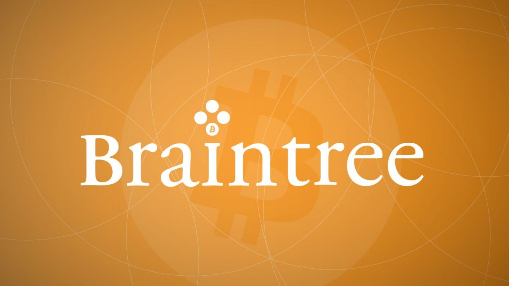

Some of our members on Cryptomen, posted that video, how cool is that?
Bitcoins are mined using a cryptographic algorithm called SHA-256. This algorithm is simple enough to be done with pencil and paper, as I show in this video. Not surprisingly, this is a thoroughly impractical way to mine. One round of the algorithm takes 16 minutes, 45 seconds which works out to a hash rate of 0.67 hashes per day.
Tooltip TextBlockNet is an altcoin integration/consolidation facility similar to JL777’s SuperNET where services of coins which are a part of BlockNet can access or expose services to any other coins via a true P2P API built on top of XCurrency‘s XBridge. SuperNET has as its core BTCD to provide various utlities such as TelePods and teleport, or various other facilities jl777 has already built for NXT.
Other coins on the BlockNet network include: Fibre, NeXT Horizons, Sonic, Apex, Utility Coin, BitSwift, LibrexCoin and StealthCoin.
It seems to primarily enable NXT functionality for other coins. The BlockNet XBridge is more of a true P2P protocol that actually allows cross blockchain communication. Quoting CoinTelegraph: “There are a few key differences between the services. While BlockNet does utilize NeXT Horizon’s asset exchange and XCurrency’s XBridge, it does not require centralization of 10 % of the participating currencies like that system, Xbridge is a true P2P system rather than a RPC call protocol and there is no central or core currency that has to be used.”
Coin developers can join the Blocknet Foundation and have access to the incubator, which I assume means funding/networking.
More details coming up! Thank’s for the collaboration of Bearish Trader for this article.
If you don’t believe me or don’t get it, I don’t have the time to try and convince you, sorry.
– Satoshi Nakamoto 07/29/2010
Let me tell you something every successful person has faced in their life. Whatever you do, somebody will tell you it’s wrong. We all have friends trying to distract us from our dreams.
Whether you are buying stocks of Microsoft in 1998, Gold in 2001, Google in 2005 or Bitcoin in 2014, you will be labeled crazy. Are you creating the next facebook (Ello), again? You’re working on a revolutionary start-up, investing in real estate, technology, whatever you do.. a family member or friend will always tell you: it’s wrong.
There is one thing that differentiates you from them: research.
Don’t listen to your broke friends, you studied, you worked too hard to transform complexity into simplicity.
Those friends will always feed the status-quo, it’s easier for them.
Haters will only talk to you about Bitcoin, when the price is dropping.
They will use terms to convince you like deflationary, regulation, fiat and money laundry, which makes them economists. Right?
– Hey! What is happening to Bitcoin? It was worth $700 now at $300?
-Hey! I studied Economics in Harvard, Bitcoin is an illusion.
-Hey! I’m so happy I did not listen to you! I did not invest in Bitcoin when it was at 500$.
-Hey! I told you Bitcoin was a bad investment. Told you so, man!
Hey! Don’t listen to your broke friends.
What is the real value of Bitcoin?
From my humble opinion, there is no good or bad time to buy Bitcoin.
You are not buying a blue-chip stock. You’re buying an idea, you’re buying a game-changer protocol, so who cares about the price at this point? We all know it is manipulated and extremely volatile because of speculators. It can stay at 300$ for 6 months, it could be at 1,000$ or 75$ next month. So, when will you buy? All those scenarios are a possibility. If you’re waiting to buy Bitcoin at 150$, you’re not getting it. If you’re waiting to sell at 1,000$ again, you don’t understand.
You’re not buying gold or a painting. Bitcoin is a revolutionary currency/method of payment/rock used to do commerce. It’s a fight against the 1%, the status-quo that is controlling our lives with interests rates and central banks. Bitcoin is a battle against a centralized system, a fraudulent monetary system. I’m not saying it will change everything, I’m saying it’s a step further in the right direction.
Bitcoin is economically 5 years old, the volatility comes from this immaturity. The market is highly speculative. Mainstream public barely understands it yet.
Some people are trying to predict the price and direction using black magic, a crystal ball or a technical analysis.
Don’t waste your time! Spend your time on research not predictability. Spend your time on ideas, not price! Build projects, share your ideas, emancipate your passion.
Price is irrelevant. The idea is to calculate the real intrinsic value behind Bitcoin. People that really believe in it, for the good reasons. Are we representing 20% or 50% of the market cap? It’s an important question, anything else is speculation and volatility.
So, who are you? Speculation or Revolution? The Wall street says: “don’t buy a stock if your passionate about it.” “Money is heartless.” “The best traders are trading with no emotions.” Those dinosaurs will be extinct when the time is right.
Those guys can easily manipulate Bitcoin price for quick gains. You need a big picture? Bitcoin’s market value is now around $4B, comparing it to the S&P total market value above $15,000B, Ford at $57B, PetroChina at $723B or Apple at $600B.
Where am I going with this?
Bitcoin will always have an advantage over other fiat currencies, over other investments.
Ford, PetroChina or Apple won’t revolutionize the world, they will never help humanity reach equality. Their purpose is to make as much profit as possible. F-150 and iPhones probably won’t exist in 2030.
Bitcoin is a revolution, it is sovereignty, it is monetary freedom. It’s born from the idea to make the world better, it has a sociological and political purpose.
You don’t buy Bitcoin like you buy stocks. Did you ever hear somebody say: I’m passionate about PetroChina, they will revolutionize the world! Nope.
Our community is very powerful, motivated by passion, research, purpose, dream and revolution. We were just a couple of young punks, now we are a couple of millions.
Keep in mind: as long as we hold on our Bitcoin, the price won’t fall. When I say we, I mean the people who are a part of the revolution, not the speculation. We represent the real intrinsic value of Bitcoin. Beyond the e-commerce, beyond the the low fees, beyond the security, beyond the speed of transactions and mobility. They can’t corrupt the mathematics, they can’t manipulate us anymore.
The real value of Bitcoin, the real support is represented by all of us. It might be at 100$ Who cares? More of us will come in the future. This battle will be won with education, one by one. Let those zombies play with their money. Let those psychopaths buy and sell everyday. Let those Wall St. wolves manipulate the price.
If the real value of Bitcoin is 100$ not considering the speculators in the equation, it is phenomenal.
This is why I’m buying Bitcoin at 700$, at 500$ or 200$ at the moment, I believe there is so much more coming up for us.
Most of you would not have heard of Braintree(well at least till today). Braintree is a company that helps online business process credit card payments. Well, how does such a company end up on our blog? Well, today Paypal, which acquired braintree around this time last year, released a video that gives us a glimpse of the future. It’s a bright future, especially because it is a future where Bitcoins are easily accessible and used by merchants all around the world and supported by money processing services like Paypal.
 More about Braintree: Braintree was founded in 2007 by Bryan Johnson, a serial entrepreneur. After very successful funding rounds in 2011, Braintree launched a slew of services that made transactions much easier. It acquired Venmo in 2012 for $26.2 million. This budding company had another round of funding in 2012. By September 2013, the company was processing $12 billion annually, with 4$ billion on mobile. Later that month, Paypal acquired Braintree for $800 million.
What this means to you and me: How many times have you knowingly or unknowingly used paypal last week? I am pretty sure you have used it more than once. Now imagine Bitcoins being used instead of dollar! Billions of everyday transaction with Bitcoins! That’s a not-so-distant dream. Also, the wide usage paypal and Braintree apis mean that Bitcoin will be everywhere. It will give a huge boost to the Bitcoin economy and make Bitcoin a prominent form of currency. It will also make tasks such as transferring money way easier. Also, for us traders, this means the value of Bitcoins will only rise!
Here’s the speech from the video:
“We Are The People,
who have built a whole new place to live, dream and be.
We employ ourselves, and vote with our money.
Our phone is our wallet.
We can spend Bitcoin with a tap, without a pocket
We can buy and sell and rent and send
And lend a twenty to a friend
from the coffee bar and share-car, We Are
unstoppable, with our thumbs.
Just One Touch to buy just about anything.
No need for filling billing info time-after-time
or remember password rhymes
to get that dress, a cabin, a concert ticket.
We live on all devices, and are as mobile as nature intended.
No need to send any details or data,
Not even when we pay each other.
We have magical money, not bound by bank or bill
It’s instant, simple, and secure enough,
to get out of the way.
Consider yourself invited to ‘The People Economy'”
Bitcoin is meant to change every stratosphere we know of. The financial sector is just the beginning.
What if we came up with an idea to change the scope of political/government power by way of a complete individual autonomous system guided by a public ledger? As Jeffrey Tucker stated a few months ago, “the existence of the blockchain on a distributed network ultimately means the death of the Nation State.” Let’s see what this entails shall we?
Distributed consensus is analogous to biological genetic process. The Bitcoin network has bio-chemical-mechanical characteristics, much like organic molecules or a cellular sort of machinery whose job is to tear down and assemble molecules and replicate everywhere.
As long as they are nourished with machinery and fed with incoming transactions, the miners/agents assemble transactions into symmetrically replicated structures representing the state of affairs until the end of time like DNA produces proteins.
The new idea is, abstractly, a distributed state consensus process – the process calculates, evaluates and records an agreement replicated among the agents in society. Every person in the globe represents an individual node. Algorithms measure our variations.
Agents produce a broadly replicated record of the state of affairs, and they all agree on the facts resolved on the record. In the Bitcoin system the record is a ledger that contains facts and evaluations of those facts.
This is a self organizing system that is permitted to thrive because it reduces the energy in the system due to lower cost connections among people conducting transactions.
Literally everyone can be their own autonomous state and even be represented ‘voluntarily’ by an organization, or many organizations. Imagine the Bitcoin network operating, right now around the world: miners building data structures, traders gaming the markets, merchants and consumers, or just anyone exchanging value and ownership and in the background, developers building software, etc. Literally every facet of society can be covered. Property contracts, deals with your neighbors, trusts, wills, dispute resolution, restitution cases, basically: everything.
What is new is that money, or more broadly resource statefulness, is exchanged without middlemen. Instead the machinery to execute a market transaction is simply a program abiding by a protocol. The machinery is a new efficiency for transfer of stateful value and ownership. (Note that credit transactions are no longer inherently tied to the process.)
This market function has bifurcated or split off and become its own module in the social system. Banks work with both debit and credit, and they record statefulness in a debit/credit ledger. But the debit part doesn’t need the banks. And so the Bitcoin network pre-empts that market function, leaving the credit function to the banks, essentially re-modularizing the money system. And probably, eventually the credit function will also be pre-empted from the banking system, political system.
The system becomes a distributed consensus of individual human action one node at a time recorded on a never-ending public ledger. Every point of infrastructure can be covered. This surely sounds beautiful to me.
“Economic freedom is the greatest tool of liberation.” ~ Daniel Hawkins
There are those so-called “libertarians” that would love to ignite a violent revolution. Not remembering history in the least or the lessons of the past. That every violent revolution has led to what we have today: tyranny. They even scoff at the idea that Bitcoins can’t help to end the state. I laugh at you. Not only will Bitcoins end the nation-state but it will change the consensus of every paradigm in the globe. Why? Because it represents every individual, one node at a time. Human Action, baby! Read it. It’s a book by a guy named Mises.
By J Redman
Tip the writers! 13VxRGh6tmn7pSZoi16XXTWtjA1zT1YrNe 13VxRGh6tmn7pSZoi16XXTWtjA1zT1YrNe Received this month: BTC 0.0264
Today at least 98% of government issued currencies are scriptural money, also known as “digital money”. This digital money is kept in commercial banks accounts or networks, and flows as digits in the database on a bank’s computer servers. This is not dramatic in itself, because banking services like (paying bills online, transferring money, credit card…) are very useful services. The issue is that, in order for individuals to have access to those basic banking services they need to deal with financial institutions that will act as trustees. This is where the moral hazard lies as we will explore in this article.
“Where did the fiat money come from? It came – and this is the most important single thing to know about modern banking – it came out of thin air.” –Murray Rothbard
The Moral Hazard With Banks
When you deposit cheques or cash in your bank account you are actually lending this money to the bank, and legally you don’t own it anymore. The bank is the new owner of this money. However, when you process a transaction, let’s say you buy an Item online; it is your bank that is processing the transaction for you, and in exchange for this service the bank needs to access your personal information. Each time you use the banking services you are giving up your identity and your anonymity. The current financial system, forces us to deal with third parties (financial institution) each time we wish to access to “basic banking services”. Those financial institutions have formed a cartel that made the cost of banking services extremely high. Which fees will continue to go as stricter rules are applied to the banking system. Customers must pay fees to banks every time they use the banking network to transfer money. The result of this system is that more than 90% of the world population doesn’t have access to a credit card or even a bank account.
A Bitcoin Banking System
On the other hand, a Bitcoin banking system would work much more differently. Bitcoin’s are distributed, peer-to-peer digital currency that functions without the intermediate of any central authority. The concept was introduced in a 2008 paper by a pseudonymous developer known as “Satoshi Nakamoto”. Bitcoin’s value has increased to unimaginable levels in recent months, which verifies the popularity and demand for a competing currency by the consumer.
Bitcoins are created through the ‘’mining process’’. Mining means providing computer power to solve complex algorithms. The reward for the miners is a block of 25 Bitcoins. The total number of Bitcoins that will be issued is limited to 21million Bitcoin; there is currently 12 million Bitcoin in circulation (already created). Whereas there the US government reported statistic M2 (M1 supply, plus all of the money held in money market funds, savings accounts, and certificates of deposits (CDs) under $100,000.) in August 2013 was about $10.77 trillion [source: Federal Reserve].
Bitcoin, are stored in a personal wallet, a Bitcoin wallet is a digital portfolio that has a public key and a private key. The public key is your Bitcoin address or identifier. The private key is a secret number that allows Bitcoin to be spent. Everyone has the possibility to own more than 100 million different addresses.
All Bitcoin transaction are visible and are recorded in a public ledger (a ledger in accounting, is a book that you cannot edit once you have written in it) called the Blockchain. This ledger is updated by the Bitcoin users themselves, without any third party or fiduciary. It is completely decentralized, peer to peer system. The Blockchain is like an asset register that permits to see and track all Bitcoins in circulation.
The ownership of Bitcoin remains totally anonymous through cryptography. One of the early Bitcoin developer said: “Even though the transactions are public, the individuals tied to the transactions are anonymous. This is similar to how the stock exchange makes stock values public without disclosing individual owners.”
Our current financial system is the complete opposite, the banks act as third parties each time we use their network to make transactions. The ledgers are not public or updated by the users themselves, otherwise they are private, controlled and managed by the banks. The current financial system is entirely centralized and controlled by banks.
Thanks to the state’s privilege of being the unique providers of banking services. Banks have made the cost of transactions extremely expensive. Since bitcoins are a decentralized peer to peer currency; there is no third party that we have to pay, in order to access the banking network. Therefore, Bitcoin transactions are almost or totally free. The equivalent of 6 million dollars worth of Bitcoin got transferred from a wallet in the US to a wallet in the UK. The fees for this transaction were 6 cents. PayPal for exactly the same transaction would have charged more than 100000$.
Many experts think that the impact of Bitcoin and crypto currencies in general, on the current financial system, will be very similar to the impact of MP3 introduction and the peer to peer media sharing networks on the music industry. Bitcoin is already catching the attention of governments and banks. Countries like China and Russia encourage the usage and the acceptance of Bitcoin, as a method to avoid the US dollar petro system and its chronic inflation. Let’s face it, our system is broken and we need a new one, I am just suggesting that bitcoins could replace or bring in competition to our current monetary system. The end result would most likely bring more power and freedom to the middle class and a higher standard of living by removing unnecessary costs.
Do you think Bitcoins has the power to destroy and rebuild our current financial system?
By Slimus Bouzid
Tip the writers! 13VxRGh6tmn7pSZoi16XXTWtjA1zT1YrNe 13VxRGh6tmn7pSZoi16XXTWtjA1zT1YrNe Received this month: BTC 0.0264
 BlockNet is an altcoin integration/consolidation facility similar to
BlockNet is an altcoin integration/consolidation facility similar to 

 Bitcoin is meant to change every stratosphere we know of. The financial sector is just the beginning.
Bitcoin is meant to change every stratosphere we know of. The financial sector is just the beginning. This market function has bifurcated or split off and become its own module in the social system. Banks work with both debit and credit, and they record statefulness in a debit/credit ledger. But the debit part doesn’t need the banks. And so the Bitcoin network pre-empts that market function, leaving the credit function to the banks, essentially re-modularizing the money system. And probably, eventually the credit function will also be pre-empted from the banking system, political system.
This market function has bifurcated or split off and become its own module in the social system. Banks work with both debit and credit, and they record statefulness in a debit/credit ledger. But the debit part doesn’t need the banks. And so the Bitcoin network pre-empts that market function, leaving the credit function to the banks, essentially re-modularizing the money system. And probably, eventually the credit function will also be pre-empted from the banking system, political system.{kind=link}
{kind=link}